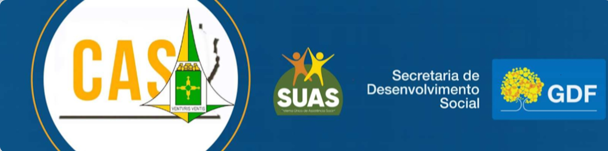

A+
A-
🌓

CAS/DF
Conselho de Assistência Social
Planejamento Estratégico
Início
Sobre o CAS/DF
O Conselho
Presidência
Secretaria Executiva
Composição / Conselheiros
Comissões Temáticas
Regimento Interno
Resoluções e Atas
Resoluções do CAS/DF
Atas de Reuniões
Reuniões
Lives
Conferências
Conferências Distritais
Conferências Regionais
Eleições
Entidades Inscritas
Fiscalização
Inscrição
Legislação
Código de Ética
Leis Distritais - CAS/DF
Leis Distritais - FAS/DF
Legislações Federais (CNAS)
Resoluções do CNAS
Contato